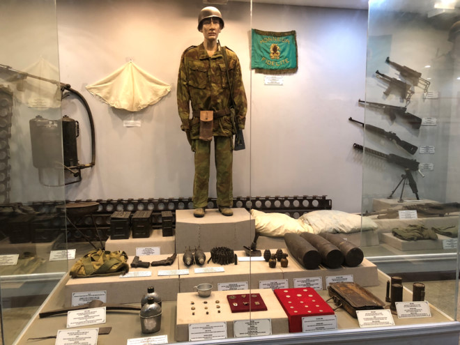
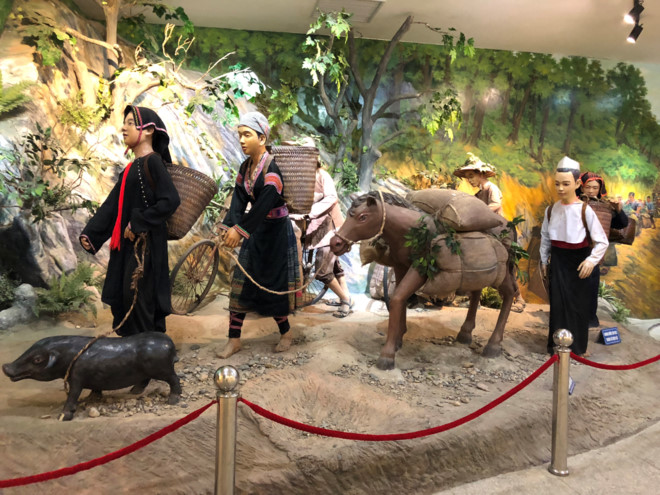

Bảo Tàng Chiến Thắng Điện Biên
Bảo tàng Chiến thắng lịch sử Điện Biên Phủ
Bảo tàng chiến thắng lịch sử Điện Biên Phủ - nơi tôn vinh giá trị lịch sử của chiến thắng lừng lấy 5 châu, chấn động địa cầu là một trong những điểm đến vô cùng ý nghĩa trong những ngày tháng 7 thiêng liêng này.

Bảo tàng Chiến thắng lịch sử Điện Biên Phủ tọa lạc tại quốc lộ 279, phố 3, phường Mường Thanh, thành phố Điện Biên Phủ, tỉnh Điện Biên. Được khởi công xây dựng từ tháng 10/2012 trên diện tích 22.000m2 và chính thức mở cửa đón khách vào ngày 5/5/2014 sau 19 tháng thi công, Bảo tàng chiến thắng lịch sử Điện Biên Phủ là công trình quy mô, hoành tráng và hiện đại nhất tỉnh Điện Biên hiện nay. Công trình này có ý nghĩa vô cùng quan trọng về lịch sử, văn hóa cũng như kiến trúc và phần nội dung trưng bày, đảm bảo các yêu cầu về chất lượng, kỹ thuật, xứng tầm với chiến thắng “Lừng lẫy năm châu, chấn động địa cầu”.
Nhà bảo tàng được thiết kế dạng hình nón cụt, phần trang trí xung quanh được tạo hình quả trám tượng trưng như tấm lưới ngụy trang của chiếc mũ anh bộ đội, gồm 1 tầng hầm và 1 tầng nổi. Trong đó, tầng hầm là nơi đón tiếp khách tham quan, không gian học tập, tương tác và các dịch vụ vui chơi giải trí. Tầng nổi là không gian trưng bày cố định chuyên đề chiến thắng lịch sử Điện Biên Phủ, không gian panorama (toàn cảnh) và bộ phận làm việc.
Nhà bảo tàng được thiết kế dạng hình nón cụt, phần trang trí xung quanh được tạo hình quả trám tượng trưng như tấm lưới ngụy trang của chiếc mũ anh bộ đội, gồm 1 tầng hầm và 1 tầng nổi. Trong đó, tầng hầm là nơi đón tiếp khách tham quan, không gian học tập, tương tác và các dịch vụ vui chơi giải trí. Tầng nổi là không gian trưng bày cố định chuyên đề chiến thắng lịch sử Điện Biên Phủ, không gian panorama (toàn cảnh) và bộ phận làm việc.
Phần trưng bày được bố trí ở tầng nổi của Bảo tàng với diện tích trưng bày rộng 1.250m2 với gần 1000 tài liệu, hiện vật (nhiều chất liệu), hình ảnh, bản đồ được đánh giá là một trưng bày hiện đại, được tổ chức khoa học và mỹ thuật với sự hỗ trợ của kỹ thuật và công nghệ tiên tiến. Phần trưng bày này được sắp xếp theo trình tự thời gian, có sự đan xen với lối trưng bày theo bộ sưu tập hiện vật, đã thực sự đáp ứng được cấu trúc chung và yêu cầu nội dung của chiến thắng Điện Biên Phủ. Lộ trình tham quan gồm không gian chung với 5 chủ đề: Sơ lược cuộc kháng chiến chống Thực dân Pháp xâm lược; Chiến dịch Điện Biên Phủ (âm mưu của Thực dân Pháp, chủ trương của ta, diễn biến chiến dịch Điện Biên Phủ); Tác động của chiến thắng Điện Biên Phủ đối với trong nước và thế giới; Sự giúp đỡ của nhân dân thế giới trong chiến dịch Điện Biên Phủ và Tôn vinh.
Với nhiều hạng mục quan trọng bằng mô hình, khối tượng và gần 1000 tài liệu, hiện vật, ảnh, … có liên quan đã khái quát một cách sinh động, rõ nét cuộc kháng chiến chống thực dân Pháp của quân và dân ta trong đó chủ yếu là 56 ngày đêm “Khoét núi, ngủ hầm, mưa dầm, cơm vắt” của chiến dịch Điện Biên Phủ lịch sử
Các hiện vật trưng bày được đặt trong tủ kính, có bệ đỡ phủ nhung đỏ với hệ thống chiếu sáng đảm bảo yêu cầu nhằm làm nổi bật hiện vật. Dưới mỗi hiện vật đều có chú thích đầy đủ các thông tin về hiện vật một cách ngắn gọn, xúc tích, làm nổi bật ý đồ của việc trưng bày hiện vật tại bối cảnh đó, không gian đó, để người xem thấy rằng mỗi hiện vật hoặc một nhóm hiện vật là một câu chuyện, là một giai đoạn lịch sử. Với những hiện vật gắn với những kỳ tích của cá nhân được đặt trang trọng tại những vị trí dễ nhìn, dễ quan sát và dễ giới thiệu, tuyên truyền cho khách tham quan như: Xe đạp thồ của ông Ma Văn Thắng, xe cút kít của ông Trịnh Đình Bầm, áo lụa của đồng chí Nguyễn Phú Xuyên Khung hay máy điện thanh của đồng chí Chu Văn Mùi.
Tại mỗi không gian trưng bày, ngoài tài liệu, hiện vật là phối cảnh không gian bằng các mô hình người, vật, đồ vật, cây cối được làm giả. Có thể kể tới những không gian nổi bật như: phối cảnh kéo pháo vào trận địa, vận chuyển lương thực, phá đá mở đường tại phần chủ trương của Đảng ta trong chiến dịch Điện Biên Phủ. Đây thực sự là một nội dung trưng bày quan trọng, rất sinh động đã cho thấy sự chuẩn bị kỹ lưỡng cho chiến dịch, yếu tố quan trọng góp phần làm nên chiến thắng, cũng là một trong những kỳ tích của quân và dân ta trong trận đánh này. Một không gian khác cũng nổi bật không kém là phần trưng bày về công tác quân y với các mô hình bác sĩ, y tá chăm sóc thương binh trong các hầm trú ẩn cả về phía ta và Pháp, đã cho thấy thực tế đau thương của chiến tranh, sự khốc liệt của súng, pháo và bom mìn. Sâu sắc hơn, đó những nỗ lực, chiến công thần kỳ của công tác quân y khi cứu chữa và trả về các đơn vị hơn 5000 thương binh, có thể tiếp tục chiến đấu.
Bên cạnh những hiện vật, tài liệu, Bảo tàng đã sử dụng một khối ảnh tư liệu hết sức đa dạng trong trưng bày. Bên cạnh những bức ảnh tư liệu gốc được sao chụp lại, còn có rất nhiều ảnh tư liệu được khai thác từ các cơ quan lưu trữ, các nhà nhiếp ảnh trong và ngoài nước. Đây thực sự là nguồn tư liệu phong phú giúp người xem có cái nhìn đầy đủ hơn về chiến dịch Điện Biên Phủ không chỉ từ con mắt của những người Việt Nam mà còn dưới góc nhìn của báo chí, con người phương Tây trước, trong và sau chiến thắng Điện Biên Phủ. Bảo tàng còn dành hẳn một phòng trưng bày ảnh chân dung những chiến sĩ có thành tích xuất sắc trong chiến dịch Điện Biên Phủ được phong tặng danh hiệu anh hùng lực lượng vũ tranh nhân dân. Đây là cách để trân trọng, tôn vinh và tri ân những anh hùng đã góp phần làm nên chiến thắng quan trọng nhất trong cuộc kháng chiến chống Thực dân Pháp xâm lược của quân và dân ta.
Đặc biệt, tại Nhà trưng bày đã tổ chức trưng bày một số loại pháo mà trước đây chỉ trưng bày ngoài trời như Sơn pháo, Cao xạ, pháo 105mm, pháo H6. Pháo 105mm và pháo H6 là những vũ khí hạng nặng lần đầu tiên được sử dụng, đã đem lại hiệu quả bất ngờ và gây những thiệt hại trầm trọng cho Pháp. Mặc dù cũng là lần đầu tiên ta sử dụng hai loại pháo này nhưng pháo 105mm đã đánh những đòn phủ đầu hoàn hảo, giúp mở cửa cho bộ binh tiến lên đánh chiến các cứ điêm và H6 đã giáng những đòn chí tử cho Pháp, đẩy nhanh sự sụp đổ của Tập đoàn cứ điểm Điện Biên Phủ.
Cùng với đó, toàn bộ phía trong tầng 2 của nhà bảo tàng được thiết kế bức tranh panorama, tái hiện lại toàn bộ chiến dịch Điện Biên Phủ bằng những bức tranh được vẽ liên hoàn trên tường trong cùng một không gian) và phần trưng bày ngoài trời xung quanh khuôn viên Bảo tàng đã tạo thành một hệ thống trưng bày, tham quan logic, khoa học, hợp lý, đảm bảo điều kiện làm việc, tổ chức các sự kiện, khai thác và phục vụ du khách tham quan, phục vụ tốt công tác nghiên cứu và học tập của các cá nhân và tổ chức.
Với nhiều hạng mục quan trọng bằng mô hình, khối tượng và gần 1.000 tài liệu, hiện vật, hình ảnh… đã khái quát sinh động, sắc nét cuộc kháng chiến chống thực dân Pháp của quân và dân ta trong 56 ngày đêm “khoét núi, ngủ hầm, mưa dầm, cơm vắt” của chiến dịch Điện Biên Phủ. Sự hoành tráng trong thiết kế cùng thủ pháp trưng bày độc đáo như đưa người xem trở lại chứng kiến cuộc kháng chiến trường kỳ của dân tộc Việt Nam trong suốt chiều dài những năm kháng chiến chống Pháp.
Và trong những ngày tháng 7 thiêng liêng này, khi toàn Đảng, toàn dân và toàn quân ta tưởng nhớ, tôn vinh và tri ân công lao to lớn của các anh hùng liệt sĩ, các thương binh, bệnh binh – những người đã ngã xuống, đã hy sinh cả tuổi thanh xuân của cuộc đời mình hay để lại một phần máu xương nơi chiến trường vì nền độc lập, tự do của dân tộc, vì hạnh phúc của nhân - Bảo tàng Chiến thắng lịch sử Điện Biên Phủ thực sự là một điểm đến vô cùng ý nghĩa đối với mỗi du khách khi đặt chân tới mảnh đất Điện Biên anh hùng. Thông qua các tài liệu, hiện vật tại Bảo tàng, một thông điệp của các thế hệ cha anh đã được chuyển tải đến lớp lớp các thế hệ đi sau đó là: Bằng lòng quả cảm và trí tuệ vô song, bằng mưu lược quân sự đã được nâng tới tầm nghệ thuật, được hun đúc bởi lòng yêu nước nồng nàn, chính nghĩa và lịch sử mấy ngàn năm giữ nước; bằng sự hy sinh anh dũng của bao anh hùng liệt sỹ, chiến sỹ, sự đóng góp xương máu của đồng bào; bằng sự hiệp đồng chặt chẽ của các dân tộc anh em, sự ủng hộ của dư luận tiến bộ trên thế giới... dân tộc Việt Nam ta đã làm nên chiến thắng Điện Biên Phủ lừng lẫy năm châu, chấn động địa cầu.


TIN MỚI NHẤT
- Danh tiếng của du lịch Việt Nam ngày càng được biết đến
- UNESCO: Nhiều thách thức đang đè nặng lên di sản ở Việt Nam
- Sôi nổi “Hành trình về nguồn” tại Điện Biên
- Xây dựng phòng tuyến ứng phó dịch bệnh Covid-19 trên biên giới
- Phát huy hiệu quả tuyên truyền phòng, chống dịch Covid-19
- Nỗ lực hoàn thành xây dựng nhà ở cho hộ nghèo Mường Nhé (24/04/2020)
- Có hay không việc cấp sổ đỏ “chồng” lên hành lang hạ lưu cống thoát nước của Tỉnh lộ 140? (22/05/2020)
- Bài học về việc tuyên truyền hỗ trợ (02/06/2020)